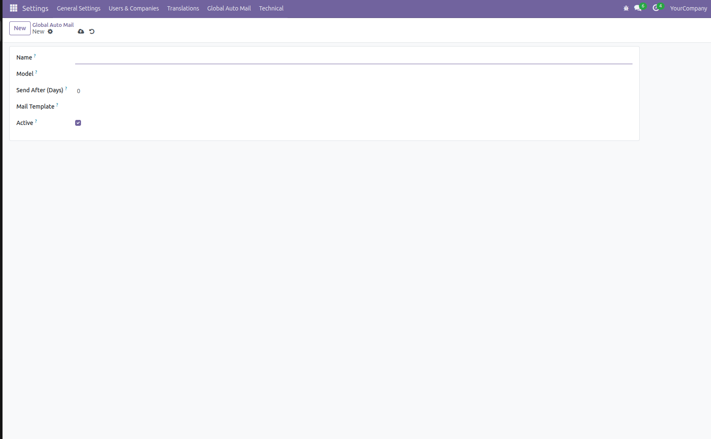
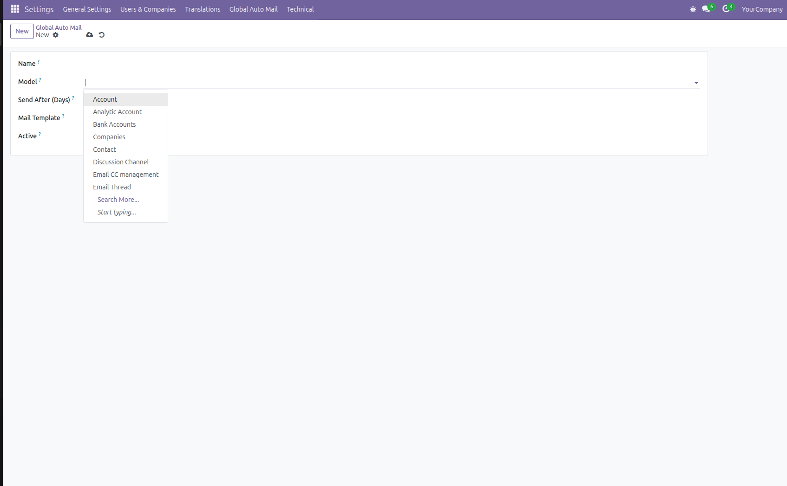
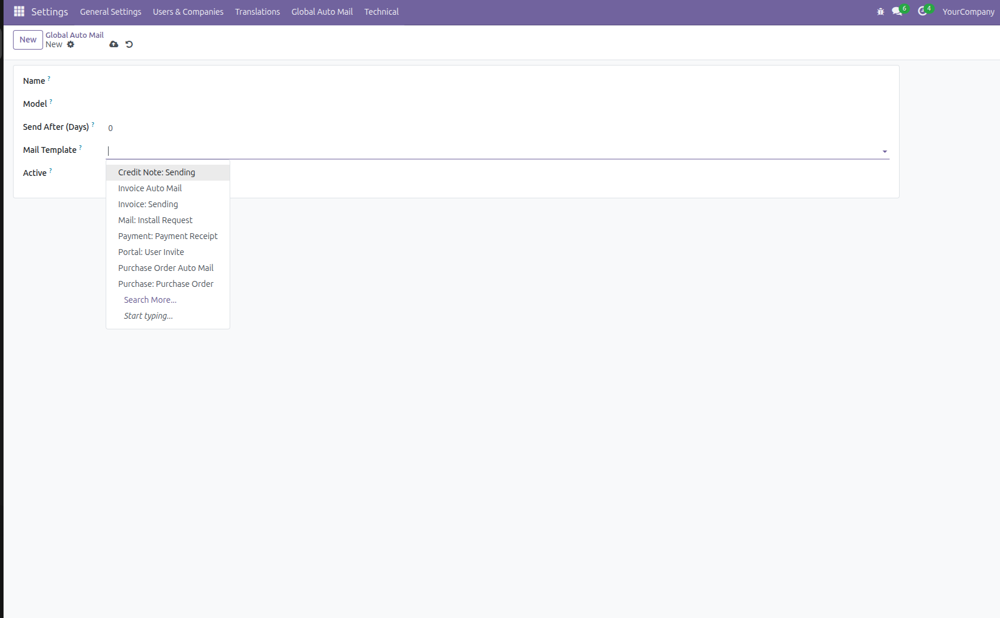

Advanced Automated Email Workflow System for Odoo ERP
Global Auto Mail Configuration is a smart automation module designed to send emails automatically after a defined number of days based on record creation date. It eliminates manual follow-ups and improves business communication efficiency.
Below are screenshots of the module configuration and workflow.



Q: Can I use it for any model?
Yes, you can select any Odoo model available in the system.
Q: Will it send duplicate emails?
No, it tracks records using auto_mail_sent flag.
Q: Is it compatible with Odoo Enterprise?
Yes, compatible with Community & Enterprise.
Contact INOM ERP for implementation & enterprise customization.
Contact Us